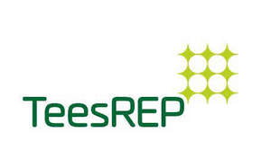

Trade Mark Journal No.2025/010 7 March 2025
UK00004165816 26 February 2025 (1,7,9,11,35,37,39,40,41,42)

- Class 1
- Chemical products for use in power generation and fuel treatment; chemical products for use in the treatment of waste; solvents and chemicals for use in carbon capture and storage.
- Class 7
- Apparatus and installations for power generation; uninterruptible power supplies (machines) for the generation of electrical energy; power supply apparatus [generators]; parts and fittings for the aforesaid.
- Class 9
- Apparatus and instruments for conducting, switching, transforming, accumulating, regulating, monitoring or controlling electricity; fuel meters; fuel measuring and dispensing equipment; parts and fittings for all the aforesaid goods.
- Class 11
- Fuel processing installations; renewable energy processing installations; sustainable energy processing installations; parts and fittings for all the aforesaid goods.
- Class 35
- Retail services connected with the sale of electricity and energy; retail services connected with the sale of biomass; business management of energy requirements for others; business consultancy and advisory services in the field of energy generation and the management of power plants; public awareness of the need for energy efficiency and conservation; information, advice and consultancy relating to the aforesaid.
- Class 37
- Building, repair and maintenance of power stations, generating plants, and power supply systems; on-site project management relating to the construction, repair and maintenance of power stations, generating plants and power supply systems; information and advisory services related to all the aforesaid.
- Class 39
- Distribution and storage of electricity; energy supply services; supply of steam; supply of heat; transmission and distribution of electricity and other energy sources; waste collection, removal and storage; renewable energy collection and storage; carbon dioxide capturing, collection, removal and storage; carbon capturing, collection, removal and storage; information and advisory services related to all the aforesaid.
- Class 40
- Power generation; production of energy; generation of energy from renewable sources; material treatment of biomass; water treatment; waste treatment; processing and refinement of fuel materials; conversion and treatment of bi-products from power stations and cooling towers; compression of carbon dioxide; processing of chemicals and materials used in carbon capture and storage; information and advisory services related to all the aforesaid.
- Class 41
- Education and training services related to environmental and energy efficiency matters; education and training in the fields of power supply, waste management, alternative fuels, farming of fuel crops, carbon capture and storage health and safety, engineering and construction; information, advice and consultancy relating to the aforesaid.
- Class 42
- Prospecting and exploiting natural fuel resources; advisory, information and consultancy services relating to energy management and efficiency; advisory, information and consultancy services relating to renewable energy; technical project studies concerning energy efficiency; energy use and conservation consultancy; scientific and technological services and research and design services relating to power plants, power supply and alternative fuels; design of energy and power systems; testing of power generating plants, pipework and transmission lines; scientific and technological services and research and design services relating to carbon capture and bioenergy with carbon capture and storage; providing scientific information, advice and consultancy relating to renewable energy; consultancy services in relation to compliance with industrial, environmental, construction and health and safety laws and regulations; information and advisory services relating to all the aforesaid services.
MGT Teesside Limited
Representative: Walker Morris LLP